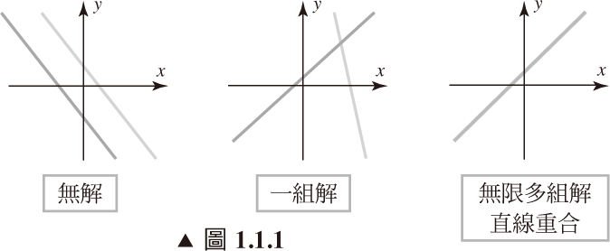
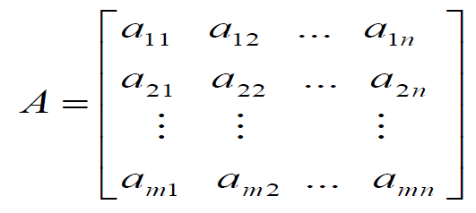
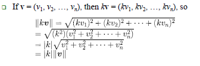

wrtten by Wildsky
1.1 線性方程式系統的介紹
Introduction to Systems of Linear Equations


線性方程式 (Linear Equations)
任何在xy平面上的直線都可被表示為 a1x + a2y = b
- 通式: 定義一個線性方程式 : a1x1 + a2x2 + ··· + anxn = b
-
- 其中a1,a2.....,an,和b都是實數
- The variables in a linear equatio為n are sometimes called unknowns.
- x + 3y = 7, y = (1/2)x + 3z + 1 和 x1-2x2-3x3+x4 = 7 都是線性
- 線性方程式中, 變數不會"相乘"或是"開根號"
- 所有的變數只會以一次方的形式出現, 不會有"三角函數"或"指數對數"的形式
- 方程式的解(solution)會使方程式滿足等式
- 有個詞叫通解(general solution)
線性系統 (Linear Systems)
- A finite set of linear equations in the variables x1, x2, …, xn is called a system of linear equations or a linear system (線性系統).
-
- 一串數字 s1, s2, …, sn 為該系統的唯一解
- 一個系統沒有解為矛盾方程組 (inconsistent)
- 一個系統有無限多組解為相容方程組 (consistent)
- 每個線性系統只會有這三種可能: 單一解,無解,無限多組解
- 兩個線性方程式常見的系統(General system):
-
-
- a1x + b1y = c1 (a1, b1 均非零)
- a2x + b2y = c2 (a2, b2 均非零)
- 兩條線平行 (parallel) – 無解 (no solution)
- 兩條線交於一點 (intersect at only one point) – 唯一組解 (one solution)
- 兩條線重合 (coincide) – 無限多組解 (infinitely many solutions)
-

有三個變數的線性系統即為平面方程組 (如下圖)
增廣矩陣(Augmented Matrices)
- 將原本的 + , x, = 等符號省略, 只留係數在方陣中
- 必須以相同的順序放置常數
列運算 (Row Operation)
- 解決一個線性方程組最基本的方法是用"有相同解但更單純"的式子取代原式
- 因為一個增廣矩陣的列 correspond to the equations in the associated system, a new system is generally obtained in a series of steps by applying the following three types of operations to eliminate unknowns systematically.
- 這些被稱為元素列運算
-
- 將等式乘以某個非零常數
- 將兩個等式互換
- 加上某個等式的倍數
1.2 高斯消去法 Gaussian Elimination
梯形 (Echelon Forms)
- 有下列性質的矩陣為簡約列-梯型 (reduced row-echelon form)
-
- 若該列並非完全為零,則首項為 1 (leading 1)
- 若有任一列都是零, 則統一擺至矩陣的最底下
- 在連續兩個非零列,下方的leading 1必比上方列更右邊
- 每一行除了leading 1, 其他都是零 (垂直的來看)
- 滿足前三項則為列-梯型 (row-echelon form)
- P.s : 一個簡約列-梯型矩陣必有列-梯形矩陣的性質, 但反之則無
簡約列-梯形 (Reduced row-echelon form)
列-梯形 (Row-echelon form)
消去法 (Elimination Methods)
(略)
- 步驟 1~5 會形成一個列-梯形矩陣, 稱作高斯消去法(推進階段) (Gaussian elimination(forward phase))
- 步驟 1~6 會形成一個簡約列-梯形矩陣, 稱作高斯-喬丹消去法(推進逆向階段) (Gaussian-Jordan elimination (forward +backward phases))
- 每個矩陣都有獨特的簡約列-梯形矩陣,但其列梯形矩陣卻可能不唯一
- 逆向帶入 or 反向帶回法 (Back-Substitution)
-
- 有時會偏好以高斯消去法來解一個線性方程系統以便得到一個 to bring 增廣矩陣 into 列-梯形矩陣 without continuing all the way to the 簡約列-梯形矩陣.
- 這件事發生時, 對應的方程式系統即可以用逆向帶入法得解
齊次方程系統 (Homogeneous Linear Systems)
- 常數項都是零
- 所有其次方程組都是相容的(consistent), 因為他們都有(0,0,0,...,0)這組解
-
- 稱作明顯解(trivial solution)
- 若有其他的解的話稱作, 不明顯解(nontrivial solutions)
- 這種系統的解只有兩種可能
-
- 只有明顯解
- 有無限多組解(包括明顯解)
定理
- 定理1.2.1 : 若一齊次方程組有n個未知數,且其增廣矩陣的簡約列-梯形矩陣有 r 非零行, 那這個系統有 n-r 個自由變數 (free variables)
- 定理1.2.2 : 一個"未知數數目比方程式多"的齊次方稱組有無限多組解
P.S:
- 每個矩陣都有其獨特的簡約列-梯形矩陣
- 列-梯形矩陣不獨特
- 雖然列-梯形矩陣並不獨特, 但所有的矩陣的列-梯形 A 都有同樣多的零行, and the leading 1’s always occur in the same positions in A 的列-梯形.
1.3 矩陣&矩陣運算 Matrices and Matrix Operations
定義 & 表示法 (Definition and Notation)
- 一個矩陣是一堆數字的矩形陣列. 這些數字被稱為元素(entries)
- 一個m*n的矩陣表示為
- 在i列j行的元素會表示成 aij or <A>ij. 如果 aij 是實數, 通常會被稱為純量(scalars)
- 前述的矩陣可被寫成 [aij]m*n 或 [aij]
- 一個n*n的矩陣 A 被稱作 order n 的方陣
- A matrix with only one row is called a row matrix (or a row vector).
- A matrix with only one column is called a column matrix (or a column vector).
和,差,積 Sum, Difference, and Product
(略)
partitioned
submatrices
(略)
不需知道完整的矩陣就可以求到某行或某列的元素
- 矩陣 AB 的 第 j 行 = A[矩陣 B 的第 j 行]
- 矩陣 AB 的 第 i 列 = [矩陣 A 的第i列]B
Matrix Products as Linear Combinations
The product Ax of a matrix A with a column matrix x is a linear combination of the column matrices of A with the coefficients coming from the matrix x
線性系統的矩陣形式 (Matrix Form of a Linear System)
- The matrix A is called the coefficient matrix of the system
- The augmented matrix of the system is given by

Matrices Defining Functions
(暫略)
轉置矩陣 (Transpose)
- 若 A 是任意的 m*n 矩陣 , 則A的轉置矩陣(記做AT), 被定義成行列互換的n*m矩陣
- 也就是說, AT的第一行是A的第一列, AT的第二行是A的第二列,依此類推
- 若A是方陣(square matrix), 則A的跡數(trace) 記做 tr(A),其定義為A主對角線(main diagonal)元素的和, 若 A 不是方陣則A的基數沒有意義
1.4 反矩陣;矩陣的代數性質 Inverse; Algebraic Properties of Matrices
矩陣運算的性質 (Properties of Matrix Operations)
- 對實數a和b, 我們知道 ab = ba,而這被稱作乘法的交換律(commutative law for multiplication). 但對矩陣而言 AB 和 BA 並不相等
- 有三個理由會讓等式不成立:
-
- 乘積 AB 有意義, 但 BA 沒有意義
- AB 和 BA 都有意義但大小不同
- 即使 AB 和 BA 都有意義且大小相等, 但他們仍可能不相等
定理1.4.1 (矩陣運算的性質)
- 先假設矩陣的大小可以執行下列運算, 則下列運算是有效的:
-
- A + B = B + A (加法交換律 commutative law for addition)
- A + (B + C) = (A + B) + C (加法結合律 associative law for addition)
- A(BC) = (AB)C (乘法結合律 associative law for multiplication)
- A(B ± C) = AB ± AC (左分配律 left distributive law)
- (B ± C)A = BA ± CA (右分配律 right distributive law)
- a(B + C) = aB + aC, a(B – C) = aB – aC
- (a+b)C = aC + bC, (a-b)C = aC – bC
- a(bC) = (ab)C, a(BC) = (aB)C = B(aC)
零矩陣 (Zero Matrices)
- 一個元素都是0的矩陣即為零矩陣
- 一個零矩陣可被表示為 0
- 若其大小是重要的, 我們將會以 0m*n 表示 m*n 的零矩陣
- 為了與"使用粗體字表示只有一行矩陣"的方便性一致, 我們會以 0 表示只有一行的零矩陣
- 定理 1.4.2 (零矩陣的性質)
-
- 假設矩陣的大小可以執行下列運算, 則下列的運算是可行的
-
- A + 0 = 0 + A = A
- A – A = 0
- 0 – A = -A
- A0 = 0; 0A = 0
消去律 (Cancellation Law)
- 對所有的實數:
-
- 若 ab=ac 且 a不為0, 則 b = c
- 若 ab = 0, 則至少其中一個為0
- 但這在矩陣運算中不成立
單位矩陣 (單位矩陣)
- 一個 "對角線都是1,其餘元素為0" 的方陣即是單位矩陣
-
- 記做 I,或者使用 In 來表示 n*n 的單位矩陣
- 若 A 為 m*n 的矩陣, 則 AIn = A, ImA = A
- 一個單位矩陣可以當作矩陣運算中的 1
- 定理 1.4.3
-
- 若 R 是 n*n 矩陣A 的簡約列梯形, 則 R 有一行為零, 或, R 為單位矩陣
逆矩陣 (Inverse)
- 若A為方陣, B 為相同大小的矩陣, 且 AB = BA = I 成立, 則
-
- A 為可逆的(invertible) or 非奇異矩陣(nonsingular)
- B 為 A 的逆矩陣 (inverse)
- P.S
-
- A 的逆矩陣記做 A^-1
- 不是每個方陣都有逆矩陣
- 一個逆矩陣都有逆矩陣
定理
- 定理1.4.4 : 若 B 和 C 均為 A 的反矩陣, 則 B = C
- 定理1.4.5 :
 , 在 ad-bc 不為 0 時, A 可逆, 且
, 在 ad-bc 不為 0 時, A 可逆, 且
- 定理1.4.6 : 若 A 和 B 為大小相同的可逆矩陣, 則 (AB)^-1 = B^-1*A^-1
矩陣的指數 Powers of A Matrix
- 若 A 為方陣,則我們可以定義A 的非負整數次方為
-
- 若 A 為可逆,則我們可以定義A 的負整數次方為
-


定理
- 若 A 為一個方陣, r 和 s 為整數, 則 A^rA^s = A^(r+s), (A^r)^s = A^(rs)
- 定理 1.4.7 (指數定律 Laws of Exponents)
-
- 若 A 為可逆, 且 n 為非負整數, 則:
-
- A^(-1) 為可逆, 且 (A-1)^(-1) = A
- A^n 為可逆,n 為非負整數, 則 (An)^(-1) = (A-1)^(n)
- 對任意非零的純量 k, 矩陣 kA 為可逆且 (kA)^(-1) = k^(-1)A^(-1)=[A^(-1)]/k
矩陣的多項式 (Polynomial Expressions Involving Matrices)
- 若 A 為 m*m 的方陣且若 p(x) = a0 + a1x + … + anx^n 為任意的多項式, 則有 p(A) = a0I + a1A + … + anAn, 而 I 為 m*m 的矩陣
- 也就是說, 當 A 取代上述等式中的 x , a0I取代a0 時,會有 p(A) 是" m*m 矩陣 "的結果
定理
- 定理 1.4.8 (轉置矩陣的性質)
-
- 若矩陣的大小可以執行下列運算, 則
-
- (A^T)^T = A
- (A ± B)^T = A^T ± B^T
- (kA)T = kAT, where k is any scalar
- (AB)T = BTAT
- 定理 1.4.9 (轉置矩陣的逆矩陣)
-
- A 是可逆矩陣, 則 A^T 亦為可逆 (AT)-1 = (A-1)T
1.5 基本矩陣
Elementary Matrices and a Method for Finding A^(-1)
基本矩陣
- 一個 n*n 的基本矩陣(elementary matrix) 是由一個單位矩陣In做一次列運算而得的矩陣
-
- Eij 是一個In的第i列和j列互換的基本矩陣
- Ei(c) 是一個In的第i行乘上c(c不為0)的基本矩陣
- Eij(c) 是一個將In的第j行加到第i行c次的基本矩陣( i 不等於 j )
- 定理1.5.1 (基本矩陣和列運算) : 假設 E 是一個對Im做特定列運算的 m*m 基本矩陣, 且 A 是一個 m*n 矩陣. 則 EA 是矩陣 that results from applying that same elementary row operation to A
- PS:當一個矩陣的左邊呈上一個基本矩陣E, 其效果等同於做一次基本列運算
逆運算
- 若一個基本列運算用於一個單位矩陣 I 已形成一個基本矩陣 E,再把他們從E換回來就會得到I
定理
- 定理1.5.2 基本矩陣和非奇異矩陣 (Elementary Matrices and Nonsingularity)
-
- 每個基本矩陣均可逆, 且他的 and its inverse is itself an elementary matrix. More precisely,
-
- Eij^(-1) = Eji (= Eij)
- Ei(c)^(-1) = Ei(1/c) , 且c 不為 0
- Eij(c)^(-1) = Eij(-c) , 且i 不等於 j
- 定理1.5.3 等效陳述式(Equivalent Statements)
-
- 若 A 是一個 n*n 矩陣, 則下列陳述維等效,也就是"均真"或"均假"
-
- (a) A 為可逆
- (b) Ax = 0 只有明顯解
- (c) 矩陣 A 的簡約列-梯形矩陣是 In
- (d) 矩陣 A 可以基本矩陣表示(express)
一個對矩陣做逆運算的方法 (A Method for Inverting Matrices)
-

- 在兩邊等式的右側乘上一個 A^(-1)
- The sequence of row operations that reduces A to In will reduce In to A-1
- To find the inverse of an invertible matrix A, we must find a sequence of elementary row operations that reduces A to the identity and then perform this same sequence of operations on In to obtain A-1
- PS : 假設我們有基本矩陣 E1,E2,...,En, 則
 ,
, 
使用列運算來找到 A^(-1)
- (略)
- 並非每個陣列均可逆
- 判斷齊次矩陣是否有非明顯解
1.6 關於線性系統和可逆矩陣的其他內容
More on Linear Systems and Invertible Matrices
定理
- 定理1.6.1
-
- 每個線性系統方程組都只可能無解,單一解或無限多組解
- 定理1.6.2
-
- 若 A 為n*n 的可逆矩陣, 則對任意的 n*1 矩陣 b,線性系統 Ax = b 只會有一組解
- 稱作 x = A^(-1)b
線性系統的共同係數矩陣
Linear Systems with a Common Coefficient Matrix
- 以共同係數矩陣 A 解一串線性系統 Ax = b1, Ax = b2, …, Ax = bk
- 若 A 為可逆,則解為 x1 = A^(-1)b1, x2 = A^(-1)b2 , …, xk = A^(-1)bk
- 解更多係數的方法是直接形成一個矩陣 [A|b1|b2|…|bk]
- 藉著簡化它到簡約列-梯形矩陣, 我們可以藉由高斯喬丹消去法一次得到所有的 k
定理
- 定理 1.6.3, 令A為方陣
-
- 若B為滿足 BA = I 的方陣, 則 B = A^(-1)
- 若B為滿足 AB = I 的方陣, 則 B = A^(-1)
- 定理 1.6.4 (等效敘述式)
-
- 若 A 為n*n 矩陣, 則下列陳述為等效
-
- A 為可逆
- Ax = 0 只有明顯解
- 矩陣 A 的簡約列-梯形矩陣是 In
- 矩陣 A 可以基本矩陣表示(express)
- 對任何n*1的矩陣b, Ax = b 是相容的
- 對任何n*1的矩陣b, Ax = b只有一組解
- 定理1.6.5
-
- 令 A 和 B 為相同大小的方陣. 若 AB 是可逆的, 則 A 和 B 必為可逆
- 一個基本的問題:令 A 為 m*n 的矩陣, 請找出所有 m*1 的矩陣 b , 使得方程式 Ax= b 是相容的
- 若 A 為可逆, 定理 1.6.2: Ax= b 有獨特的解
- 若A 非方陣, 或若 A 是不可逆方陣
-
- 矩陣 b 必須滿足特定的情況使得 Ax = b 相容
[講義113~115!]
1.7 對角矩陣,三角矩陣, 對稱矩陣
Diagonal, Triangular, and Symmetric Matrices
對角矩陣和三角矩陣 Diagonal and Triangular
- 一個 m*m 的方陣 A; 元素(i,i) 為 A 的主對角線(main diagonal)
- 一個對角矩陣(diagonal matrix) 是一個"主對角線外的元素為零"的方陣. By diag(d1, …, dm) is meant the mm diagonal matrix whose (i,i)-entry equals di for 1 ≤ i ≤ m
- 在 1 ≤ i ≤ m 且 1 ≤ j ≤ n, 一個 n*n 的下三角矩陣 L (lower-triangular matrix) 滿足 (L)ij = 0 ( i < j )
- 在 1 ≤ i ≤ m 且 1 ≤ j ≤ n, 一個 n*n 的上三角矩陣 U (upper-triangular matrix) 滿足 (U)ij = 0 ( i > j )
對角矩陣的性質 Properties of Diagonal Matrices
- 一個典型的對角矩陣可寫為
-
-
- 一個對角矩陣是可逆的,iff 其對角線上的元素均非零
-
- 對角矩陣的指數很好計算
-
- 其他矩陣與對角矩陣的乘法非常easy!


定理 1.7.1
- 下三角矩陣的轉置矩陣世上三角矩陣,反之則反
- 下三角矩陣相乘的積依然是下三角矩陣,上三角矩陣亦然
- Iff 對角線的元素均非零時, 該三角矩陣為可逆
- 可逆的下三角矩陣的逆矩陣為下三角矩陣,上三角矩陣亦然
對稱矩陣
- 定義
-
- 一個 A^T = A 的方/矩陣 A (即 <A>ij = <A>ji), 稱作對稱
- 定理 1.7.2
-
- 若 A和 B 為相同大小的對稱矩陣, 而 k 為純量, 則
-
- A^T 為對稱
- A ± B 為對稱
- k A 為對稱
- 定理 1.7.3
-
- Iff 矩陣為可交換的 (commute, 即 AB = BA), 兩個對稱矩陣的乘積為對稱
- 定理 1.7.4
-
- 若 A 為可逆的對稱矩陣, 則 A^(-1) 亦對稱
- P.s :
-
- 通常對稱矩陣不必可逆
- 乘積 AA^T 和 A^TA 恆對稱
- 定理 1.7.5
-
- 若A 為可逆矩陣, 則 AA^T 和 A^TA 亦為可逆
第二章 行列式 (Determinants)
2.1 由餘因子展開得行列式
Determinants by Cofactor Expansion
定義
定理1.4.5中, 在ad-bc不為零時,  為可逆
為可逆
為可逆其中ad-bc為其行列式 (determinant), 記做 det(A) 或 |A|
子行列式和餘因子 Minor and Cofactor
- 定義
-
- 令 A 為 n*n
-
- A的子行列式(i,j),記做 Mij, 是(n-1)*(n-1) 矩陣 (刪去第i列和第j行)
- A的餘因子(i,j)記做 Cij, 是(-1)^(i+j)Mij
- P.S:
-
- Cij = ±Mij 且 符號如圖

- Cij = ±Mij 且 符號如圖
餘因子展開 Cofactor Expansion
- 定理 2.1.1 (餘因子展開)
-
- 給圖, 不解釋

- 下面是神奇算式

上三角矩陣的行列式 Determinant of an Upper Triangular Matrix

所以其行列式為 對角線相乘的積 !!! ------> 定理 2.1.2
小技巧 : 

2.2 由簡化列求行列式
Evaluating Determinants by Row Reduction
- 定理 2.2.1 : 令 A 為方陣, 若 A 有一行或一列均為零, 則 det(A) = 0
- 定理 2.2.2 : 令 A 為方陣, 則 det(A) = det(A^T)
- 定理 2.2.3 (基本列運算):
-
- 令 A 為 n*n 矩陣, k 為純量
-
- 若 B 為 A 的某一行 or 列乘 k 倍的矩陣, 則
-
- det(B) = k det(A)
- 若 B 為 A 的其中兩行/列互換的矩陣, 則
-
- det(B) = - det(A)
- 若 B 為 A 的某行/列倍數被加到另一行/列的矩陣:
-
- det(B) = det(A)
- 定理 2.2.4 (基本矩陣)
-
- 令 E 為一個 n*n 的基本矩陣
-
- 若 E 由 In 的某列乘以k而得, 則 det(E) = k
- 若 E 由 In 的任兩列互換而得, 則 det(E) = -1
- 若 E 由 In 的某列加另一列的倍數而得, 則 det(E) = 1
- 定理2.2.5 (列/行成比例的矩陣)
-

- 這種矩陣的行列式為零!
2.3 行列式的性質; 克拉馬公式
Properties of Determinants; Cramer’s Rule
行列式的基本性質
- 若矩陣 A 為 n 列, k 為純量, 則 det(kA) = k^n det(A)
- det(A), det(B) 和 det(A+B) 之間沒有特殊關聯
- 我們特別會強調 det(A+B) 通常不等於 det(A) + det(B)
- 定理 2.3.1
-
- 令 A, B, C 為 "只有一列不同" 的 n*n 矩陣, ... 算了不解釋

-
定理論點 2.3.2 -
- 若 B 為 n*n 的矩陣, 且 E 為 n*n 的基本矩陣, 則
-
- det(EB) = det(E)det(B)
- PS :
-
- 若 B 為 n*n 的矩陣, 且 E1,E2,...En 為 n*n 的基本矩陣, 則
- det(E1E2...ErB) = det(E1)det(E2)...det(Er)det(B)
- 定理 2.3.3 (Determinant Test for Invertibility)
-
- Iff det(A) 不為零, 方陣 A 為可逆
- 定理 2.3.4
-
- 若 A 和 B 為相同大小的方陣, 則
-
- det(AB) = det(A)det(B)
- 定理 2.3.5
-
- 若 A 為可逆, 則
-
- det(A^-1) = 1/ det(A)
[講義39,40]
餘因子矩陣 (matrix of cofactors)
定義
- 令 A 為任意 n*n 的矩陣, 且 Cij 為 aij 的餘因子, 則該矩陣即為 A 的餘因子矩陣

- 該矩陣的轉至矩陣稱作 A 的伴隨矩陣(adjoint), 記做 adj(A)

- 定理 2.3.6 (使用自身伴隨矩陣得到逆矩陣)
-
- 若 A 為可逆, 則

- 若 A 為可逆, 則
- 定理 2.3.7(克拉馬公式)
-

- 其中, Aj 為 "第j行被 b=[b1b2...bn]^T 取代" 的矩陣
- 如圖

- 定理 2.3.8 (等效敘述式)
-
- 若 A 為n*n 矩陣, 則下列陳述為等效
-
- A 為可逆
- Ax = 0 只有明顯解
- 矩陣 A 的簡約列-梯形矩陣是 In
- 矩陣 A 可以基本矩陣表示(express)
- 對任何n*1的矩陣b, Ax = b 是相容的
- 對任何n*1的矩陣b, Ax = b只有一組解
- det(A) 不為 0
-
第三章 歐幾里得向量空間
Euclidean Vector Spaces
3.1 在二維,三維,N維空間的向量
Vectors in 2-Space, 3-Space, and n-Space
向量幾何 (Geometric Vectors)
 則, 向量 v 的起點為 A, 終點為 B
則, 向量 v 的起點為 A, 終點為 B- 長度和方向相同的兩個向量為相等 (equivalent)
- 起點和終點為同一點的向量,其長度為零, 稱為零向量,記為0
定義
- 若有兩向量 v 和 w, 則 v + w 的和為下方形成的向量:
-
- 移動 w 向量使其起點與 v 的終點重合, 向量 v + w 的方向是由 v 的起點指向 w 的終點
- 令 v 和 w 為任意兩個向量, 則 v – w = v + (-w).
- 若 v 為非零向量, 且 k 為非零實數(純量)
-
- 若 k<0 則向量的方向相反
- 若 k 或 v 任一為零,則 kv 為零向量
- kv 這種形式的向量稱為純量倍數 (scalar multiple)

座標(Coordinate)中的向量

三維座標中的向量

若起點為 P1(x1,y1,z1), 終點為 P2(x2,y2,z2)
則 
- 定理 3.1.1 (向量算數的性質)
-
- 若 u, v, w 都是向量, 且 k,l 為純量, 則有下列的關係
-
-
- u+v = v+u
- (u+v)+w = u+(v+w)
- u+0 = 0+u = u
- u+(-u) = 0
- k(lu) = (kl)u
- k(u+v) = ku+kv
- (k+l)u = ku + lu
- lu = u
-
- 定理 3.1.2
-
- 若 v 是向量, k 是純量,則
-
- 0v = 0
- k0 = 0
- (-1)v = -v
- 若 w 是一個向量, 則它可被說是一個由 v1, v2, v3,..., vr 的線性混合
-
- 若他符合 w = k1v1 + k2v2+k3v3+...+krvr
- 且 k1, k2, k3, k4, k5, ...為純量
向量的替代記法
- Comma-delimited form : v = (v1,v2,...,vn)
- row-matrix form v = [v1 v2 ... vn]
- Or a column-matrix form

3.2 範數, 內積, 和距離
Norm, Dot Product, and Distance in Rn
向量的範數 (norm)
- 向量 u 的長度被稱為範數(norm) 或 u 的絕對值, 記做 ||u||
- 由畢氏定理, 若在三維空間 u = (u1,u2,u3)

若不只三維,則依此類推
定理 3.2.1
若 v 為一個向量, 且 k 為任意純量,則
- ||v|| > 0
- 只有在 v = 0 時, ||v|| = 0
- ||kv|| = |k|*|v|

單位向量(Unit vector)
- 範數為 1 的向量即為單位向量
- 一個向量除以它的長度即可得單位向量,
- 上述的動作稱為正規化v(該向量的名稱)
標準單位向量(Standard Unit Vectors)
在一個矩形座標系統中, 方向為正,且方向洽為軸的單位向量稱為標準單位向量 (standard unit vectors)
In R2 i = (1,0), j = (0,1) ; In R3, i = (1,0, 0), j = (0, 1, 0), k = (0, 0, 1)
二維座標中的每個向量 v = ( v1, v2 ) 都可被標準單位向量表示為 線性混合 (linear combination)
歐幾里德距離(Euclidean distance)
兩點之間的距離即為該向量的範數
若 P1( x1, y1, z1 ) 和 P2( x2, y2, y2 ) 均為在三維空間中的兩點, 則兩點之間的距離 d , 為向量  的範數
的範數 
(略)
內積(Inner Product) , 點積(Dot Product)

點積 (Dot Product)

若 u 和 v 均非零, 且 θ 為該夾角, 則
- 只有在 u‧v > 0 時, θ 為銳角 (acute)
- 只有在 u‧v < 0 時, θ 為鈍角 (obtuse)
- 只有在 u‧v = 0 時, θ 為直角 (π/2)
內積的分量式(Component Form)


定理3.2.2
令 u, v, w 為向量(二維或三維), k為純量
- u‧v = v‧u 對稱性 (symmetry property)
- u‧(v+w) = u‧v + u‧w 分配律 (distributive property)
- k(u‧v) = (ku)‧v = u‧(kv) 同質性 (homogeneity property)
- v‧v ≧ 0 ; (若 v = 0 ) v‧v = 0 正向性 (positive property)
定理3.2.3
令 u, v, w 為向量(二維或三維), k為純量
- 0‧v = v‧0 = 0
- (u+v)‧w = u‧w+v‧w
- u‧(v-w) = u‧v-u‧w
- (u-v)‧w = u‧w - v‧w
- k(u‧v) = u‧(kv)
- 定理3.2.5 柯西不等式 (Cauchy-Schwarz Inequality)

- 若 u = (u1,u2,u3,....un) , v = (v1,v2,v3,....,vn), 則
-
- |u‧v|≦||u||‧||v||
- 定理 3.2.6 向量的平行四邊形恆等式
-
- Parallelogram Equation for Vectors
- 令 u, v 為向量, 則

- 定理 3.2.7
-
- 若 u 和 v 為向量 with the Euclidean inner product
- 則 u‧v = (1/4)||u+v||^2-(1/4)||u-v||^2
矩陣乘法的內積 (Dot Products as Matrix Multiplication)
- u‧v = u^Tv = v^T u
-
- EX :

- EX :
- 若 A 為 n*n 矩陣, u 和 v 為 n*1 矩陣
-
- Au‧v = u‧A^Tv
3.3 正交 Orthogonality

- IFF u‧v = 0 時, θ = π/2
- 定義: 兩個非零向量 u, v 為正交 (orthogonal) 或稱 垂直 (perpendicular)
- 零向量對任意向量均為正交
- 若一個集合中所有相異的向量均正交, 則被稱作正交集合 (orthogonal set)
- 一個單位向量的正交集合稱作正交規範集 (orthonormal set)
法向量 (normal)
要指定斜率和斜角可以利用非零向量 n 法向量 ( normal ) ---> 垂直於一條線或一個平面
- 定理 3.3.1
-
- 若 a 和 b 為 not all zero 的常數,則 ax+by+c = 0 這個方程式代表 "法向量 n = (a,b)" 的直線
- 若 a, b, 和 c 為 not all zero 的常數,則 ax+by+cz+d = 0 這個方程式代表 "法向量 n = (a,b,c)" 的直線
- 定理 3.3.2 投影定理 (Projection Theorem)
-
- 若有向量 u, a,且 a 不為 0, 則 u 可以u=w1+w2 來表示之, 其中 w1 是 a 的純量倍數, w2 垂直於 a
- 向量 w1 稱作 u 在 a 上的垂直投影, 或是 u 對 a 的一個分量
-
- 向量 w2 被稱作 u 對 a 的垂直分量
-


垂直投影的長度 Length of Orthogonal Projection
||proj(a)u|| = |u‧a| / |a| = ||u|| |cosθ| -----> θ為 u 和 a 之間的夾角


- 定理 3.3.3 畢達哥拉斯定理 Theorem of Pythagoras
-
- 若 u, v 為互相垂直的兩個向量 with the Euclidean inner product, 則
- ||u+v||^2 = ||u||^2 + ||v||^2
- 定理 3.3.4
-
- (a) (x0,y0) 到 ax+by+c=0 的距離

- (b) (x0,y0,z0) 到 ax+by+cz+d=0 的距離

- (a) (x0,y0) 到 ax+by+c=0 的距離
兩平行平面間的距離只要求其中一平面上的某點至另一平面的距離即可得
3.4 線性系統的幾何 The Geometry of Linear Systems
向量和參數方程式 Vector and Parametric Equations
- 一個二維或三維空間中的線可由一個點 x0 和平行於該線的非零向量決定
- 一個三維空間中的平面可由平面中的一個點 x0 和兩個不共線且平行該平面的向量(noncollinear vectors) v1 和 v2 決定

- 若x為線上的一點, 則向量 x - x0 會是 v 的純量倍數
- 以 x-x0 = tv 或 x = x0 + tv 表示
- 變數 t (參數) 距離從- ∞ 到 ∞,點 x 即可描繪出直線 L
定理 3.4.1
- 令 L 為包含了點 x0 且平行於非零向量 v 的直線, 則直線方程式為
-
- x = x0 + tv
- 若 x0=0, 則該條線通過原點, 方程式表示為
-
- x = tv
- 藉由 x0 可從原點來平移 (translation)
- 若 x 為平面上任意點, 則藉由 v1 和 v2 適當的純量倍數, 我們可以得到一個"對角線為 x - x0, 且鄰邊為 t1v1 和 t2v2"的平行四邊形, 因此, 我們可以 x – x0 = t1v1 + t2v2 或 x = x0 + t1v1 + t2v2 來表示
- 隨變數 t1 和 t2 分別從 –∞ 到 ∞ 變化, 點 x 即在整個平面 W 上跑 (?)
定理 3.4.2
- 令 W 為一個在三維空間中"包含點x0且平行於不共線兩向量 v1, v2 "的平面, 則該方程式表示為
-
- x = x0 +t1v1+t2v2
- 令 x0 = 0, 則平面通過原點的方程式表示為
-
- x = t1v1+t2v2
定義
- 若 x0 和 v 為向量, 而 v 非零, 則方程式 x = x0+tv 定義了一條"通過 x0 , 且平行於 v "的直線, 當x0 = 0 時, 該直線過原點
- 若 x0, v1 和 v2 為向量, 且 v1 和 v2 不共線, 則方程式 x = x0+t1v1 + t2v2 定義了"通過x0 且平行於v1,v2"的平面, 當x0 = 0 時, 該平面過原點
向量式
- 前述的方程式稱作一條直線或平面的向量式 (vector forms)
- 若在這些方程式中的向量are expressed in terms of their components and the corresponding components on each side are equated, then the resulting equations are called 參數式 (parametric equations) of the line and plane.
- Example 1 : x=(x,y,z), x0=(1,2,-3), 則:
-
- 向量式(vector forms)為 (x,y,z)= (1,2,-3) + t(4,-5,1)
- 參數式(parametric equations)為 x = 1+4t, y = 2-5t, z = -3+t
- Example 2: 有一平面 x-y+2z = 5, 則:
-
- 向量式為 (x,y,z) = (5,0,0) + t1(1,1,0) + t2(-2,0,1)
- 參數式為 x = 5+t1-2t2, y = t1, z=t2
過兩點的直線
- 若 x0, x1 為相異兩點, 則直線由這些平行於向量 v = x1 -x0 的點決定
- 直線可以被表示為 x = x0 + t(x1-x0) 或 x=(1-t)x0 + tx1
- 這些被稱作一條線的兩點向量方程式 (two-point vector equations)
定義
- 若 x0, x1 為向量, 則方程式 x = x0 + t(x1-x0) (0 ≦ t ≦ 1) 定義了線段 (x0 到 x1)
- 為了方便, 會記做 x=(1-t)x0 + tx1 (0 ≦ t ≦ 1)
- Example: 從 x0=(1,-3) 到 x1=(5,6) 的線段可以表示為
-
- x = (1,-3) + t(4,9) (0 ≦ t ≦ 1)
- x = (1-t)(1,-3) + t(5,6) (0 ≦ t ≦ 1)
線性系統的點積型式
- 回想線性方程式的一個形式
-
- a1x1+a2x2+…+anxn = b (a1,a2, …, an not all zero)
- 而相對應的齊次矩陣方程式為
-
- a1x1+a2x2+…+anxn = 0 (a1,a2, …, an not all zero)
- 這些方程式可以用 letting a = (a1,a2,…,an) 和 x=(x1,x2,…,xn) 重寫
- 兩個等式可被寫作 a‧ x = b , a‧x = 0
- 這表示每一個齊次方程式的解向量 x 均垂直於係數向量 a
- 若我們以 r1, r2, ... rm 表示係數矩陣的連續列向量
- 則我們會以 r1‧x = 0 r2‧x = 0 r3‧x = 0 ... r3‧x = 0 表示這個系統
定理 3.4.3
_________
定理 3.4.4
相容線性系統 Ax=b 的通解可用其任意的解加上 Ax=0 的通解而得
幾何解釋 : 
3.5 外積 Cross Product
定義
- 若 u = (u1,u2,u3) 和 v=(v1,v2,v3) 式三維空間的向量, 則外積 u×v 是個向量, u×v = (u2v3 – u3v2, u3v1 – u1v3, u1v2 – u2v1)
- 或者以行列式表示法表示之
-

定理 3.5.1 (外積和內積的關係)
- 若 u, v 和 w 是三維空間中的向量, 則
-
- u‧(u x v) = 0 ( u x v 垂直於 u )
- v‧(u x v) = 0 (u x v 垂直於 v)
- || u x v ||^2 = ||u||^2 ||v||^2 – (u · v)^2 (Lagrange’s identity)
- u x (v x w) = (u · w) v – ( u · v ) w (外積和內積的關係)
- (u x v) x w = ( u · w) v – (v · w) u (外積和內積的關係)
定理 3.5.2 (外積的性質)
- If u, v and w are any vectors in 3-space and k is any scalar, then
-
- u x v = - (v x u)
- u x (v + w) = u x v + u x w
- (u + v) x w = u x w + v x w
- k(u x v) = (ku) x v = u x (kv)
- u x 0 = 0 x u = 0
- u x u = 0
兩個向量的外積可以 3*3 的行列式表示:

u x (v x w) = (u x v ) x w 通常不會是正確的
#右手定律 XD
外積的幾何意義
由 Lagrange’s identity , 我們得到
|| u x v ||^2 = ||u||^2 ||v||^2 – (u · v)^2
|| u x v ||^2 = ||u||^2 ||v||^2 – ||u||^2 ||v||^2 (cosθ)^2
= ||u||^2 ||v||^2 ( 1 – (cosθ)^2)
= ||u||^2 ||v||^2 (sinθ)^2
因為 0 ≦ θ ≦ π ( 因為 0 ≦ sinθ )
由 Lagrange’s identity, || u x v ||^2 = ||u||^2 ||v||^2 – (u · v)^2
若 θ 表示 u 和 v 之間的角度, u‧v = ||u|| ||v|| cosθ